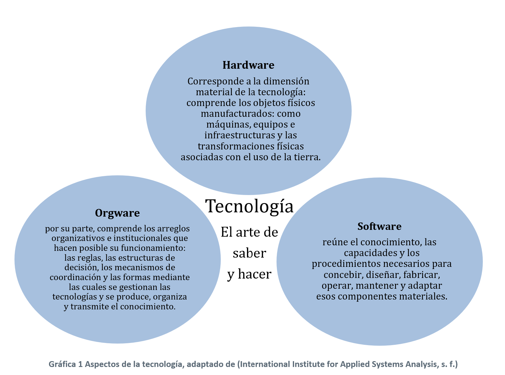
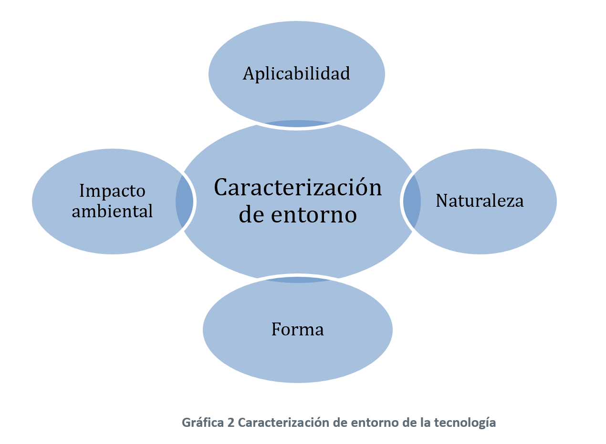
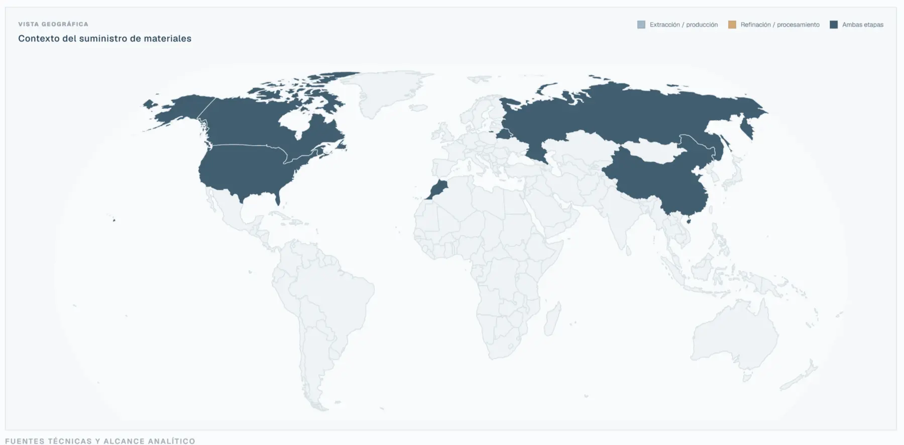

El papel paradójico de la tecnología dentro de la crisis climática
Necesitamos nuevas tecnologías para enfrentar la crisis, pero producirlas e implementarlas también exige energía, materiales, infraestructura, conocimientos e instituciones. ¿Cuándo constituye una tecnología una respuesta climática adecuada?
Una base conceptual para leer la tecnología como sistema y organizar evidencia sin confundir descripción con decisión.
Abrir el Atlas →Descargar artículo en PDF ↓
Abrir índice+
De la intervención humana a la paradoja tecnológica
Gran parte de las personas sabemos que todo trabajo o actividad desarrollada de nuestra parte, incide, directa o indirectamente, en la relación que mantenemos con nuestro planeta y la naturaleza. Cultivamos la tierra para producir alimentos, transformamos la energía, diseñamos máquinas, nos transportamos y también nuestras mercancías, levantamos infraestructuras enormes, formulamos políticas, reglas y leyes, enseñamos, cuidamos, practicamos cientos de artes para expresarnos, creamos nuestras familias y así muchas más actividades, esto siempre ha implicado e implicará utilizar recursos que provienen siempre de nuestro planeta.
Entonces el poder tomar decisiones capaces de proteger, transformar o al contrario, deteriorar las condiciones que sostienen la vida es parte de la rutina de cualquier persona, sin que sea consciente de tal efecto. Es decir, ninguna de las actividades mencionadas es completamente ajena a la crisis climática. Y quienes trabajamos directamente en este campo tampoco estamos por fuera de los sistemas que la originaron ni de sus contradicciones; nuestra responsabilidad en particular consiste en estudiar sus efectos, hacerlos visibles y contribuir a orientar procesos, decisiones y proyectos hacia un camino que no sea autodestructivo, o eso queremos creer.
La crisis climática es el resultado acumulado de todas esas decisiones, especialmente de aquellas relacionadas con la forma de producir energía, movilizarnos, fabricar bienes, construir ciudades y transformar los ecosistemas, así mismo, con los modos que hemos definido como humanidad para utilizar los recursos naturales en estas actividades. Estas decisiones respondieron a las necesidades, los intereses comunes y particulares y el conocimiento de cada época, y permitieron ampliar las posibilidades de desarrollo, confort, vivienda, trabajo y, en general, hasta cierto punto proveer los medios de subsistencia de esas generaciones. No obstante, muchas ocasionaron daños y desigualdades que no fueron previstos o que, aun siendo conocidos, fueron ignorados; personalmente, percibo que esta última situación ha sido la más recurrente. Aunque la responsabilidad y los impactos se han distribuido de manera profundamente desigual, la evidencia científica es clara respecto del origen humano del calentamiento observado y de la gravedad de sus consecuencias. Independientemente de si, como persona, se ha contribuido mucho o poco, o se han experimentado sus efectos en mayor o menor medida, todos hacemos parte del problema, adaptado de (Intergovernmental Panel on Climate Change, 2023).
La tecnología como amplificador de la acción humana
¿Qué intensificó esta crisis? Podrían enumerarse diversos factores: sobrepoblación, desigualdad, ambición desmedida, afán e irresponsabilidad. Desde una perspectiva centrada en el comportamiento humano, todos podrían calificarse como rasgos negativos. Sin embargo, existe un factor que rompe con la idea de atribuir la crisis únicamente a nuestras peores cualidades y es la capacidad de crear. Es aquí donde aparece el tema central de esta publicación: la tecnología. Esta capacidad ha multiplicado a diferentes escalas, el impacto de nuestras decisiones hasta inducir la crisis climática actual.
Como ingeniero mecánico, me siento orgulloso de todo lo que nuestra capacidad de crear nos ha permitido materializar a lo largo de la historia. Las máquinas, los sistemas energéticos, las infraestructuras, los procesos industriales y las formas de organización de la producción han permitido transformar la materia, la energía y el territorio con una velocidad y una magnitud sin precedentes, buscando el bienestar personal, grupal y hasta cierto punto la satisfacción de la mente.
De manera semejante, estas dinámicas han llevado a proporciones desmedidas tanto la riqueza y el bienestar concentrados en una pequeña parte de la población como la pobreza y el sufrimiento soportados por una gran parte de ella. Sin embargo, la tecnología no actuó por sí sola en esta crisis. Sus componentes materiales, cognitivos y organizativos constituyeron los medios a través de los cuales el ser humano amplió su capacidad de intervención. En particular, los modelos dependientes de los combustibles fósiles y de la extracción intensiva de recursos profundizaron particularmente las desigualdades sociales y socavaron la capacidad de los ecosistemas para sostener la vida, el reporte Global Resources Outlook de 2024 (United Nations Environment Programme, 2024) detalla en esta problemática de desigualdad y recursos.
La paradoja tecnológica de la acción climática
En este punto presento la paradoja tecnológica para la acción climática: para reducir los impactos de los sistemas tecnológicos que contribuyeron a provocar la crisis necesitamos desarrollar y desplegar nuevas tecnologías; sin embargo, producirlas e implementarlas también requiere energía, materias primas, infraestructura y territorio, y puede reproducir o intensificar algunos de los impactos que se busca resolver.
Esta paradoja fomenta un cambio en la manera de comprender y evaluar la tecnología. Esto implica que como sociedad pensemos en que toda innovación tecnológica no será automáticamente favorable para el clima, ni que la crisis pueda resolverse mediante la simple sustitución de unos equipos o procesos por otros. Y tampoco que toda tecnología deba serlo de manera inmediata, en muchos contextos todavía son necesarias tecnologías que intensifican el cambio climático, pero que, al mismo tiempo, sostienen la vida y satisfacen necesidades esenciales de muchas personas.
Esa manera de comprender la tecnología nos impulsa entonces a buscar más caminos, uno de ellos es reducir sus impactos negativos. Sabemos que estos dependen principalmente de su fuente de energía; del origen y procesamiento de las materias primas que utiliza; de su fabricación, vida útil y disposición final; de las capacidades necesarias para operarla; de las instituciones que orientan su implementación; de quién puede acceder a ella, y de los fines y modelos productivos a los que sirve.
La pregunta base que se trabaja
Por eso, la pregunta fundamental que abordo en este artículo es: ¿en qué medida una tecnología constituye una respuesta climática adecuada?
Esta pregunta no es nueva. La he encontrado en diferentes espacios profesionales y académicos en los que he participado, y también está presente en el trabajo de las entidades públicas, empresas, organismos internacionales, universidades y organizaciones de la sociedad civil. Desde sus respectivos campos de acción, estos actores han desarrollado estudios, metodologías, taxonomías y bases de datos para identificar, caracterizar y evaluar tecnologías que contribuyan a mitigar las emisiones de gases de efecto invernadero, fortalecer la adaptación a los efectos del cambio climático y evitar, reducir al mínimo y afrontar las pérdidas y los daños asociados, y, al mismo tiempo, desarrollan las operaciones y los procesos para las que fueron concebidas.
El desafío no radica, por tanto, únicamente en disponer de información, sino en poder interpretarla de manera conjunta. Estas fuentes fueron creadas con distintos propósitos, escalas de análisis, definiciones y criterios de clasificación: algunas se concentran en la función climática de las tecnologías; otras, en sus componentes, grado de madurez, posibilidades de transferencia o condiciones de implementación. Como resultado, una misma tecnología puede aparecer con diferentes nombres, niveles de desagregación y características, lo que dificulta relacionar los registros, comparar sus contenidos y convertirlos en información útil para orientar decisiones.
Con el propósito de disponer de una herramienta que permita visualizar y consultar rápidamente este amplio volumen de información de manera armonizada entre distintas fuentes, este artículo presenta un análisis estructurado de algunos de los recursos de información más relevantes en la materia. Para ello, se examinan su razón de ser, origen, características, orientación, ventajas y limitaciones, y finalmente se presenta una herramienta digital construida a partir de estas fuentes. La aplicación fue desarrollada con HTML, CSS y JavaScript, publicada con acceso abierto mediante GitHub Pages y apoyada por herramientas de inteligencia artificial para la organización y gestión de los datos.
Sin embargo, armonizar información procedente de fuentes tan diversas exige algo más que reunir registros en una misma plataforma o hacer coincidir sus categorías. Implica establecer relaciones entre contenidos construidos con diferentes propósitos y niveles de detalle, sin eliminar las particularidades ni el contexto de cada fuente.
Antes de definir qué fuentes de información utilizar, cómo pueden emplearse y cómo deben organizarse, es necesario hacer explícita la perspectiva desde la cual se evaluará la tecnología. Esto implica reconocer qué tipo de datos se están analizando, qué afirmaciones pueden formularse, mediante qué evidencia y qué responsabilidades surgen de sus efectos a nivel social y ambiental, en los escenarios que hagan uso de esta propuesta.
Una perspectiva crítica y ética para evaluar la tecnología
Responder la pregunta fundamental planteada anteriormente, exige articular dos elementos. El primero es ético y político: examina los fines de una tecnología, las relaciones de poder que incorpora y la distribución de sus beneficios, riesgos e impactos. El segundo es epistemológico: determina cómo sustentar su evaluación mediante evidencia, cómo tratar la incertidumbre y bajo qué condiciones revisar las conclusiones. En lugar de adoptar una única corriente filosófica, esta publicación reúne perspectivas que permiten abordar estas dimensiones desde distintos ángulos con el objetivo de blindar el análisis a conclusiones subjetivas tanto como sea posible.
- Tecnología, poder y no neutralidad
El marco principal se alinea con la teoría crítica de la tecnología desarrollada por Andrew Feenberg. Desde esta perspectiva, los sistemas tecnológicos no son fuerzas autónomas ni instrumentos completamente neutrales: su diseño, orientación y funcionamiento incorporan decisiones sociales, intereses, valores e instituciones, favorecen determinados fines y dificultan otros. Además, quienes controlan su diseño y operación pueden recibir sus beneficios mientras trasladan costos, riesgos y responsabilidades hacia otras comunidades, territorios, generaciones o ecosistemas (Feenberg, 2005). Por ello, una tecnología no debe analizarse únicamente por lo que puede hacer, sino también por quién la orienta, para qué se utiliza y sobre quiénes recaen sus consecuencias.
Responsabilidad ante los efectos de largo plazo
Esta capacidad de transformación introduce una responsabilidad proporcional al alcance adquirido por el poder tecnológico en un escenario ideal. Para ello, me soporto en la ética de la responsabilidad de Hans Jonas, él advierte que las consecuencias de la tecnología moderna pueden superar el espacio y el tiempo inmediatos de una decisión, acumularse en los sistemas naturales y comprometer las condiciones de vida de las generaciones futuras. Una tecnología no puede valorarse, por tanto, solo por su utilidad presente o por las intenciones con las que fue desarrollada, sino también por la extensión, duración y posible irreversibilidad de sus efectos (Berdinesen, 2017).
Esta responsabilidad adquiere una expresión concreta frente al cambio climático mediante el desarrollo resiliente al clima. El IPCC presenta este desarrollo como un proceso que integra la mitigación y la adaptación para apoyar el desarrollo sostenible, reconociendo que el clima, los ecosistemas (incluida la biodiversidad y la sociedad) conforman sistemas acoplados (Intergovernmental Panel on Climate Change, 2022). Responder al cambio climático exige, por tanto, considerar simultáneamente las consecuencias de las decisiones sobre las personas y los sistemas naturales.
Integridad ecológica y justicia climática
Esta perspectiva converge con la ética ambiental, que amplía la consideración moral hacia otras formas de vida, los ecosistemas y los procesos naturales que sostienen la vida. En este marco, la integridad de los ecosistemas constituye un criterio de análisis, entendida como su capacidad para mantener los procesos ecológicos fundamentales, recuperarse de las perturbaciones y adaptarse a nuevas condiciones (Intergovernmental Panel on Climate Change, 2022).
De manera simultánea, esta responsabilidad se conecta a la ética climática y encuentra una expresión concreta en la justicia climática. Esta perspectiva nos ha permitido examinar cómo se han distribuido las responsabilidades históricas y los impactos del cambio climático, así como las cargas y los beneficios de las medidas adoptadas para enfrentarlo. También considera las diferencias en los recursos y las capacidades de respuesta, y a quiénes participan en decisiones que pueden afectar de manera desigual a países, territorios, poblaciones y generaciones (Ara Begum, 2022), (Gardiner, 2004) y (Heyward, 2024).
Trasladar estos criterios al análisis de la tecnología exige preguntarse quién puede acceder a esta, quién interviene en su orientación, diseño e implementación, quién recibe sus beneficios y sobre quiénes recaen sus costos y riesgos. En consecuencia, llegamos de nuevo a un punto visto previamente:
Una tecnología no constituye una respuesta climática adecuada únicamente porque reduzca emisiones o vulnerabilidades. Su incorporación también puede generar nuevas afectaciones o profundizar desigualdades, incluso cuando cumple su finalidad.
Bioética global y condiciones para la continuidad de la vida
Esta ampliación de la responsabilidad converge, a su vez, con la bioética global propuesta por Van Rensselaer Potter, concebida como un puente entre el conocimiento biológico, ecológico y los valores humanos necesarios para preservar la vida y sus condiciones de continuidad (Zanella, 2019). En esta publicación, sin embargo, la bioética cumple una función únicamente informativa. Se mantendrá el énfasis en el marco principal: la ética de la tecnología, enriquecida por la ética ambiental, la integridad ecológica y la justicia climática debido a su relación directa con el objeto analizado y la pregunta que se está abordando en este artículo.
Contraste, incertidumbre y revisión
La perspectiva propuesta señala qué dimensiones deben considerarse, pero no permite asumir que las conclusiones alcanzadas sean definitivas. En este punto, me permito traer a colación mis primeros semestres de ingeniería en la universidad, el racionalismo crítico de Karl Popper aporta una orientación metodológica:
afirmar que una tecnología constituye una respuesta climática adecuada debe entenderse como una proposición provisional, abierta a la contrastación, la crítica y la revisión.
La denominación de “tecnología climática” no demuestra por sí misma su conveniencia para enfrentar esta crisis; esta debe confrontarse con evidencia sobre su desempeño, sus condiciones de implementación y sus efectos esperados y observados. Cuando aparezcan resultados que contradigan o limiten sus beneficios atribuidos, la evaluación deberá modificarse en lugar de proteger la conclusión inicial (Popper, 2002).
En conjunto, estas dimensiones orientan una revisión crítica, sistemática y sustentada en evidencia. Cada tecnología se examina entonces, mediante criterios explícitos que consideran su función y desempeño, sus condiciones de implementación, su ciclo de vida, la distribución de beneficios y riesgos, sus efectos sobre la integridad ambiental, sus implicaciones para la justicia climática y sus posibles consecuencias futuras.
La objetividad buscada no elimina la ética ni los valores propios de la humanidad, sino busca hacer explícitos los criterios utilizados y hacerlos ajenos a evaluaciones sesgadas en la medida de lo posible al aplicarlos de manera consistente, manteniendo la trazabilidad de las fuentes y reconociendo las incertidumbres existentes. El propósito no es emitir un juicio definitivo sobre qué tecnología debe utilizarse, sí o sí, en una situación determinada, sino construir una base organizada, transparente y verificable que permita comparar la información disponible, revisar las conclusiones cuando surjan nuevas evidencias y orientar decisiones de amplio impacto mejor fundamentadas.
Una vez establecida la perspectiva que orienta esta revisión, es necesario ahora detallar el objeto de análisis: la tecnología.
La tecnología
Hablar de tecnología para la acción climática exige ir más allá del entendimiento de los dispositivos, máquinas o a los procesos. Para tal alcance, se parte desde los trabajos desarrollados por el Instituto Internacional para el Análisis de Sistemas Aplicados, en los cuales define la tecnología de una manera sencilla pero con un alcance mucho más amplio comparado con el que se mantiene generalizado, su definición para tecnología es: El arte de saber y hacer (International Institute for Applied Systems Analysis, s. f.) y distingue en esta definición tres aspectos conceptuales: hardware, software y orgware.
Hardware, software y orgware
Desde esta perspectiva, una tecnología no es únicamente un artefacto o un proceso, sino la articulación entre su dimensión física, el saber que permite utilizarla y el entorno organizativo que sostiene su operación, como se describe en Gráfica 1.
Esta distinción es muy limpia, y permite ampliar la forma de analizar una solución tecnológica. Un equipo puede estar disponible y alcanzar su desempeño nominal en laboratorio, sin que existan los conocimientos para mantenerlo, la infraestructura para conectarlo, las normas para autorizarlo o los acuerdos para distribuir sus costos y beneficios. Por tanto, el desempeño no reside exclusivamente en el componente físico, sino en la articulación entre el artefacto, las capacidades humanas y el sistema organizativo dentro del cual adquiere una función.

Caracterización del entorno tecnológico
Conocer una tecnología de manera integral requiere, además, caracterizar su aplicabilidad, su naturaleza, su forma y su papel ambiental, se puede entender como una caracterización de entorno, como se ilustra en la gráfica a continuación (Gráfica 2):

La aplicabilidad permite distinguir entre soluciones generalizables, adaptables o diseñadas para un sitio;
La naturaleza muestra el peso relativo de sus componentes materiales, cognitivos y organizativos;
La forma indica si se materializa en un equipo, un proceso, un servicio, una práctica o una combinación;
Papel ambiental obliga a verificar si su contribución a la mitigación, la adaptación o la gestión de pérdidas y daños es directa, habilitante o condicionada y conocer su ciclo de vida con sus impactos ambientales.
Características tecnológicas transversales de implementación
La caracterización de una tecnología debe hacer visibles las condiciones que permiten su implementación y funcionamiento. Estas condiciones suelen no ser siempre parte del esquema del proceso tecnológico, pero determinan si puede operar de manera segura, continua y coherente con la finalidad para la cual fue concebida. Entre ellas se encuentran la infraestructura disponible; la cantidad, calidad y procedencia de la energía; los materiales e insumos; las cadenas de suministro; los repuestos; el mantenimiento, y las capacidades humanas e institucionales necesarias.
La disponibilidad de estos elementos no es suficiente por sí sola. También resulta necesario conocer su procedencia, estabilidad y compatibilidad con el contexto. Una tecnología puede depender de materiales cuya extracción genera impactos severos, de suministros concentrados geográficamente, de conocimientos especializados que no se encuentran disponibles localmente o se han privatizado o de una infraestructura cuya construcción modifica sustancialmente sus costos de producción y sesga los beneficios.
Esta situación resulta especialmente visible en el caso de los minerales críticos empleados en las tecnologías para la transición energética. La extracción y el procesamiento de minerales como el cobalto, el litio, el níquel, el grafito y las tierras raras se concentran en un número reducido de países, lo que introduce vulnerabilidades en las cadenas de suministro (International Energy Agency, 2025).

Sin embargo, el problema no se limita a su disponibilidad. En las cadenas de cobre y cobalto de la República Democrática del Congo se han documentado trabajo infantil, condiciones laborales peligrosas, riesgos asociados con la actuación de fuerzas de seguridad, corrupción y desplazamientos de comunidades (African Union Commission, & Organisation for Economic Co-operation and Development., 2024)
Estudios realizados en Kolwezi también han encontrado niveles elevados de cobalto en la sangre y la orina de habitantes de zonas mineras, especialmente de niños, además de indicios de daño oxidativo y contaminación ambiental relacionada con las actividades de extracción y procesamiento (Banza Lubaba Nkulu, 2018).
Estas tensiones no son exclusivas de la cadena del cobalto en la República Democrática del Congo. En América Latina, la extracción de litio a partir de salmueras, particularmente en el Salar de Atacama en Chile, genera presiones sobre el agua, la biodiversidad y las actividades económicas tradicionales de las comunidades próximas a los salares, además de controversias sobre su participación en las decisiones que afectan sus territorios (Comisión Económica para América Latina y el Caribe, 2023)
En Asia, la expansión de la minería de níquel en Indonesia también muestra una contradicción significativa: este mineral es utilizado en baterías para vehículos eléctricos, pero la extracción de minerales lateríticos y su procesamiento requieren grandes cantidades de energía, generan residuos y transformaciones del territorio y, debido a su dependencia del carbón, pueden producir elevadas emisiones de gases de efecto invernadero. A ello se suman problemas de contaminación del agua, deforestación y afectación de los medios de vida de comunidades locales e indígenas (Intergovernmental Forum on Mining, Minerals, Metals and Sustainable Development).
Por ello, la adecuación climática de una tecnología también depende de la trazabilidad de sus materiales, de las condiciones bajo las cuales fueron extraídos y procesados y de la distribución de los beneficios, costos, riesgos y responsabilidades a lo largo de su cadena de suministro.
Del mismo modo, una fuente de energía que parece adecuada en un territorio puede producir resultados diferentes en otro debido a la composición de su matriz energética, las condiciones ambientales o las capacidades disponibles para su operación y mantenimiento.
Las características tecnológicas transversales permiten comprender que la implementación no constituye el momento final de una compra, ni la instalación aislada de un equipo. Es un proceso de articulación entre componentes materiales, conocimientos, capacidades, instituciones y condiciones territoriales. Hacer visibles estas dependencias permite formular preguntas más precisas sobre cómo, cuándo, dónde, con quién, para qué y mediante qué instrumentos podría implementarse una tecnología.
Esta lectura sistémica se convierte en la metodología para analizar los datos objeto de estudio de este artículo, pero también plantea un nuevo desafío: establecer cómo debe organizarse la información para que las dimensiones críticas, éticas, ambientales y epistemológicas expuestas anteriormente no permanezcan únicamente como principios generales, sino que se reflejen en la manera de describir y examinar cada tecnología?
De la perspectiva formulada a la estructura de la información
La perspectiva desarrollada en esta primera parte no constituye un complemento externo al análisis tecnológico. Cada dimensión dirige la atención hacia elementos que deben hacerse visibles al momento de ver una tecnología. La teoría crítica de la tecnología plantea preguntas sobre sus finalidades, los actores que intervienen en su orientación y la distribución de sus beneficios y riesgos. La ética de la responsabilidad exige considerar el alcance temporal y territorial de sus efectos y su posible irreversibilidad. La ética ambiental y climática incorpora sus relaciones con los ecosistemas, las poblaciones y las generaciones afectadas. Finalmente, el racionalismo crítico exige sustentar las afirmaciones mediante evidencia, reconocer la incertidumbre y mantener las conclusiones abiertas a revisión.
Trasladar estas perspectivas a una estructura de información implica convertir sus preguntas en elementos observables y verificables. No basta con afirmar que deben considerarse la responsabilidad, la justicia o la integridad ambiental; es necesario identificar qué datos permiten examinarlas, de dónde proceden, cómo fueron interpretados y qué vacíos continúan existiendo. Este paso permite conectar el marco conceptual con la estructura que posteriormente orientará la construcción de la herramienta.

Objetividad, trazabilidad y revisión
En esta publicación, la objetividad no se entiende como la ausencia absoluta de valores, decisiones o interpretaciones. Seleccionar una fuente, delimitar una tecnología, establecer categorías y determinar qué información resulta relevante son decisiones analíticas. La objetividad se entiende, por tanto, en un sentido operativo: presentar información sustentada, aplicar criterios explícitos de manera consistente y permitir que otras personas puedan reconocer cómo se obtuvo cada resultado.
Para ello, es necesario distinguir entre lo que afirma una fuente y la interpretación realizada durante el proceso de armonización. Cada registro debe permitir identificar el origen de la información, su fecha, alcance geográfico y sectorial, nivel de detalle y relación directa con la tecnología descrita. Cuando una clasificación haya sido asignada como parte del análisis, debe reconocerse como tal y explicarse el criterio utilizado.
La trazabilidad también exige conservar las diferencias y posibles contradicciones entre las fuentes. Armonizar no significa eliminar esas diferencias ni producir una síntesis artificialmente uniforme. Cuando dos documentos empleen nombres distintos, definan límites diferentes o presenten resultados incompatibles, la herramienta debe permitir reconocer esa situación. De igual manera, la ausencia de información debe conservarse como un vacío identificable y no completarse mediante suposiciones presentadas como hechos.
La revisión constituye el tercer componente de esta aproximación. Toda afirmación sobre el desempeño o la conveniencia climática de una tecnología debe permanecer abierta a nuevas evidencias. Por ello, la información necesita incorporar fechas de consulta y actualización, estado de revisión y nivel de validación. Las herramientas de inteligencia artificial pueden apoyar la búsqueda, organización, comparación o síntesis de datos, pero sus resultados no constituyen por sí mismos una fuente. Cualquier contenido generado o transformado con su apoyo debe mantener conexión con la evidencia documental y someterse a verificación humana.
Evidencia, caracterización y evaluación contextual
Para evitar que una descripción se confunda con una recomendación, la información puede organizarse en tres niveles relacionados, pero metodológicamente diferentes: evidencia documental, caracterización analítica y evaluación contextual.
| Nivel | Pregunta principal | Contenido |
|---|---|---|
| Evidencia documental | ¿Qué afirma la fuente? | Descripción, datos, autoría, fecha, alcance, contexto y referencias consultadas. |
| Caracterización analítica | ¿Cómo puede organizarse e interpretarse la información? | Denominación armonizada, hardware, software, orgware, aplicabilidad, naturaleza, forma, papel ambiental y requisitos de implementación. |
| Evaluación contextual | ¿La tecnología constituye una respuesta adecuada para una situación determinada? | Línea base, desempeño, ciclo de vida, costos, riesgos, capacidades, condiciones territoriales, actores involucrados y alternativas disponibles. |
Tabla 1. Niveles de información para el análisis tecnológico. Elaboración propia a partir del análisis desarrollado en esta primera parte.
La evidencia documental constituye el punto de partida. Su función es conservar lo que puede verificarse en las fuentes sin atribuirles alcances que no poseen. Una taxonomía puede establecer que una tecnología pertenece a un sector o grupo determinado, pero esa clasificación no demuestra su viabilidad, desempeño o conveniencia para un territorio.
La caracterización analítica permite relacionar fuentes diferentes mediante una estructura común. En este nivel se ubican las categorías adoptadas para describir los componentes y las condiciones de una tecnología. Aunque se fundamenten en marcos conceptuales, estas categorías son una forma de interpretación y deben aplicarse mediante reglas transparentes.
La evaluación contextual exige información adicional y no puede deducirse automáticamente de los dos niveles anteriores. Así mismo, determinar si una tecnología resulta adecuada requiere delimitar el problema, establecer una línea base, comparar alternativas y considerar las condiciones económicas, ambientales, sociales, técnicas e institucionales del lugar donde podría implementarse. Y finalmente, también requiere incorporar a los actores que participan en la decisión o que pueden verse afectados por ella.
La herramienta debe poder organizar la evidencia documental y la caracterización analítica y, con ello, preparar una evaluación mejor fundamentada. No obstante, nunca debe sustituir el análisis contextual ni presentar una clasificación general como si fuera una decisión aplicable en cualquier territorio.
Información necesaria para comprender una tecnología
A partir de esta distinción, un perfil tecnológico integral debería reunir, como mínimo, seis grupos de información:
Identificación y procedencia: nombre original y armonizado, descripción, fuente, fecha de consulta, alcance geográfico y sectorial y nivel de desagregación.
Función y relación climática: necesidad a la que responde, servicio que presta, mecanismo mediante el cual puede contribuir a la mitigación, la adaptación o la gestión de pérdidas y daños, y condiciones que limitan esa contribución.
Configuración sistémica: componentes físicos correspondientes al hardware; conocimientos, capacidades y procesos asociados al software, y normas, instituciones, acuerdos y estructuras de decisión que conforman el orgware.
Características y requisitos de implementación: aplicabilidad, naturaleza, forma, papel ambiental, madurez tecnológica, infraestructura, energía, materiales, insumos, suministros, mantenimiento y capacidades necesarias.
Consecuencias y distribución: impactos potenciales durante el ciclo de vida, efectos sobre los ecosistemas, alcance temporal y territorial, beneficiarios, actores afectados, condiciones de acceso y distribución de costos y riesgos.
Evidencia y validación: referencias que sustentan cada afirmación, supuestos utilizados, incertidumbres, información faltante, posibles contradicciones, fecha de actualización y estado de revisión técnica.
Estos grupos no implican que toda fuente deba contener la totalidad de la información. Su función es permitir reconocer qué dimensiones han sido documentadas y cuáles permanecen abiertas. Un registro que muestre de manera explícita sus vacíos resulta más útil y confiable que uno aparentemente completo construido mediante inferencias no verificadas.
Esta estructura también permite conservar la diferencia entre caracterizar una tecnología y evaluarla. El perfil puede mostrar qué es, cómo funciona, de qué depende y qué consecuencias deben examinarse. Determinar si conviene implementarla, en cambio, requiere contrastar esa información con un problema, una línea base, un territorio, otras alternativas y las prioridades de los actores involucrados, que no es el alcance inicial de este trabajo.
Conclusiones de la Parte I: una base conceptual para la herramienta
La paradoja tecnológica de la acción climática no consiste simplemente en que la tecnología pueda producir daños y, al mismo tiempo, ofrecer soluciones. Su sentido radica en que las capacidades utilizadas para ampliar la intervención humana sobre el planeta continúan siendo necesarias para enfrentar sus consecuencias, pero siguen dependiendo de energía, materiales, infraestructura, conocimientos, instituciones y decisiones que también pueden reproducir los impactos que se pretende reducir.
Por ello, considerar una tecnología como respuesta climática adecuada no puede depender únicamente de su nombre, de su novedad o de su desempeño durante la operación. Su adecuación es una condición relacional: depende del problema que busca resolver, del sistema tecnológico al que pertenece, del contexto donde se implementa, de la evidencia disponible y de la distribución de sus beneficios, costos y riesgos.
La perspectiva crítica, ética y epistemológica desarrollada en esta primera parte permite establecer los elementos que deben hacerse visibles para examinar esa relación. La definición de tecnología, y sus aspectos caracterizados mediante hardware, software y orgware, amplía el objeto de análisis. La caracterización de su entorno identifica sus formas de aplicación y sus dependencias; y los principios de objetividad operativa, trazabilidad y revisión establecen cómo debe organizarse la información.
El resultado de esta primera parte no es una conclusión definitiva sobre qué tecnologías deben utilizarse, sino un marco para formular mejores preguntas y construir información verificable. La segunda parte aplicará este marco para distinguir entre caracterizar, evaluar, priorizar y decidir; examinará las fuentes utilizadas y sus límites; explicará el proceso de armonización y construcción del Climate Technology Atlas, y mostrará su aplicación mediante un caso tecnológico concreto.
Bibliografía
African Union Commission, & Organisation for Economic Co-operation and Development. (2024). Africa’s development dynamics 2024: Skills, jobs and productivity. OECD. doi:https://doi.org/10.1787/df06c7a4-en
Ara Begum, R. L. (2022). Point of departure and key concepts. (C. University, Ed.) Climate change 2022: Impacts, adaptation and vulnerability. doi:https://doi.org/10.1017/9781009325844.003
Banza Lubaba Nkulu, C. C.-K.-M. (2018). Sustainability of artisanal mining of cobalt in DR Congo. Nature Sustainability (Vol. 1(9)). doi:https://doi.org/10.1038/s41893-018-0139-4
Berdinesen, H. (2017). On Hans Jonas’ “The imperative of responsibility.”. Philosophia, 16–28. Retrieved from https://philosophia-bg.com/archive/philosophia-17-2017/on-hans-jonas-the-imperative-of-responsibility/
Climate Technology Atlas. (2026). Climate Technology Atlas. Recuperado el 13 de 8 de 2026, de https://stvdio-luisgui.github.io/technology-atlas.html
Climate Technology Centre and Network. (s. f.). CTCN technology taxonomy. Obtenido de https://www.ctc-n.org/sites/www.ctc-n.org/files/resources/CTCN%20Technology%20Taxonomy.pdf
Comisión Económica para América Latina y el Caribe. (2023). Extracción e industrialización del litio: oportunidades y desafíos para América Latina y el Caribe. Retrieved from https://repositorio.cepal.org/server/api/core/bitstreams/5c1c160a-557d-42d9-bfa8-929142d2fa21/content
Feenberg, A. (2005). Teoría crítica de la tecnología (C. Alfaraz, Trad.). Revista Iberoamericana de Ciencia, Tecnología y Sociedad - CTS, 109–123. doi:https://doi.org/10.52712/issn.1850-0013-1018
Gardiner, S. M. (2004). Ethics and global climate change. Ethics, 114(3), 555–600. doi:https://doi.org/10.1086/382247
Haselip, J., Narkevičiūtė, R., Rogat, J., & Trærup, S. (2019). TNA step by step: A guidebook for countries conducting a Technology Needs Assessment and Action Plan. UNEP DTU Partnership. Obtenido de https://tech-action.unepccc.org/wp-content/uploads/sites/2/2019/04/2019-02-tna-step-by-step-guide.pdf
Heyward, C. &. (2024). Rectifying secondary climatic injustices. (E. J. (Eds.), Ed.) Studies on climate ethics and future generations, 6, 139–155. Retrieved from https://www.iffs.se/media/24255/climateethics_vol6.pdf
Hund, K., La Porta, D., Fabregas, T., Laing, T., & Drexhage, J. (2020). Minerals for climate action: The mineral intensity of the clean energy transition. World Bank. Obtenido de https://documents1.worldbank.org/curated/en/099052423172525564/pdf/P16627806f5aa400508f8c0bdcba0878a3e.pdf
Intergovernmental Forum on Mining, Minerals, Metals and Sustainable Development. (n.d.). Nickel mining in Indonesia: An overview of socioenvironmental governance in the sector (IGF Case Study). (I. I. Development, Ed.) Retrieved from https://www.iisd.org/system/files/2026-05/nickel-mining-indonesia.pdf
Intergovernmental Panel on Climate Change. (2022). Summary for policymakers AR6: Climate change 2022: Impacts, adaptation and vulnerability. Contribution of Working Group II to the Sixth Assessment Report of the Intergovernmental Panel on Climate Change. doi:https://doi.org/10.1017/9781009325844.001
Intergovernmental Panel on Climate Change. (2023). Climate change 2023: Synthesis report. Obtenido de https://doi.org/10.59327/IPCC/AR6-9789291691647
International Energy Agency. (2025). Global critical minerals outlook 2025. Retrieved from https://iea.blob.core.windows.net/assets/ef5e9b70-3374-4caa-ba9d-19c72253bfc4/GlobalCriticalMineralsOutlook2025.pdf
International Energy Agency. (2026). Global critical minerals outlook 2026. Obtenido de https://www.iea.org/reports/global-critical-minerals-outlook-2026
International Energy Agency. (s. f.). Hydrogen Production and Infrastructure Projects Database. Recuperado el 13 de 8 de 2026, de https://www.iea.org/data-and-statistics/data-product/hydrogen-production-and-infrastructure-projects-database
International Institute for Applied Systems Analysis. (s. f.). What is technology? Obtenido de https://iiasa.ac.at/what-is-technology
International Organization for Standardization. (2013). Space systems—Definition of the technology readiness levels (TRLs) and their criteria of assessment. Obtenido de https://www.iso.org/standard/56064.html
Popper, K. R. (2002). Conjectures and refutations: The growth of scientific knowledge (2nd ed.). Routledge.
Technology Executive Committee. (2015). Good practices of Technology Needs Assessments. United Nations Framework Convention on Climate Change. Obtenido de https://unfccc.int/ttclear/misc_/StaticFiles/gnwoerk_static/TEC_documents/5be1bf880cc34d52a4315206d54a711b/ed472cdbc2a84f5ba2831f268524903d.pdf
U.S. Geological Survey. (2026). Mineral commodity summaries 2026. Obtenido de https://doi.org/10.3133/mcs2026
United Nations Environment Programme. (19 de 11 de 2024). A policymakers’ guide to life cycle assessment: Policy brief. Obtenido de https://www.unep.org/resources/policy-and-strategy/policymakers-guide-life-cycle-assessment-policy-brief
United Nations Environment Programme. (2024). Global Resources Outlook 2024: Bend the Trend – Pathways to a liveable planet as resource use spikes. Nairobi: International Resource Panel. Obtenido de https://wedocs.unep.org/20.500.11822/44901
Zanella, D. C. (2019). V. R. Potter’s global bioethics. Ambiente & Sociedade, e02081, 22. Retrieved from https://www.scielo.br/j/asoc/a/4fprx7pMp9jskL9xMYSsWbd/?lang=en
La segunda parte llevará el marco a la práctica.
Examinará las fuentes, la armonización de datos y la aplicación del método en la construcción y uso del Atlas.